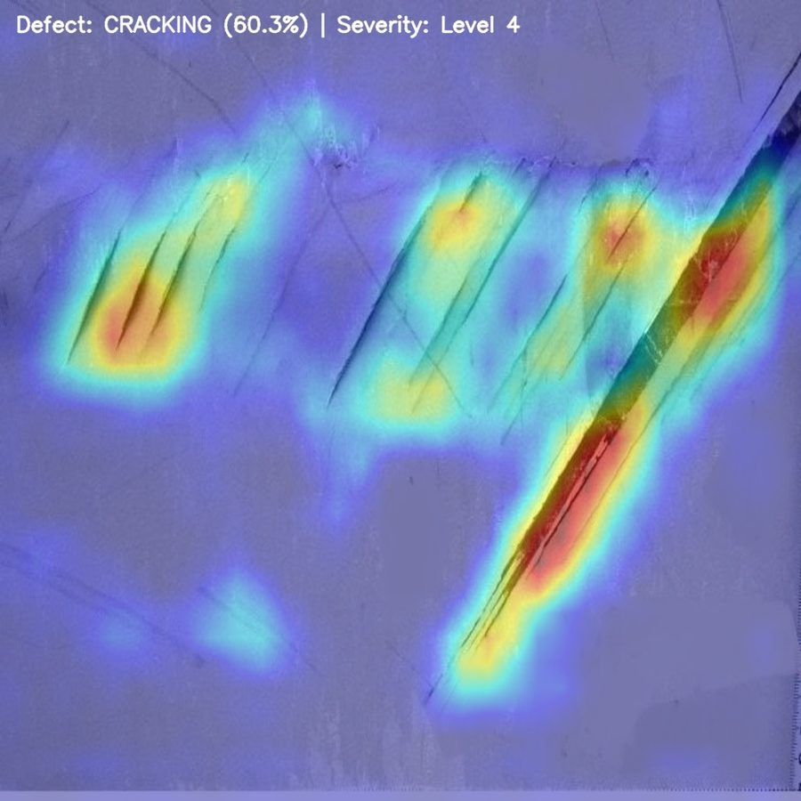

Turbine Blade Defect Triage
Deep Learning · Sem V · PyTorchTriage for drone inspection photos of wind turbine blades: what kind of damage it is, and how soon someone needs to climb up there.
An ImageNet-pretrained ResNet50, fine-tuned end to end on 1,065 drone images across six defect classes, with CBAM attention and a separate ordinal head that predicts severity from L1 to L5.
The part that mattered most was the split. Consecutive frames are near-duplicates of the same blade, so a random split quietly leaks test images into training. I grouped the frames into 361 inspection sequences, and no group crosses train, validation and test.
Honest results: deep features beat hand-crafted ones by a mile, but CBAM's edge over a plain ResNet50 is one image out of 159, which isn't statistically significant (McNemar p = 0.69). Every image in the dataset contains a defect, so it can't yet say a blade is healthy. It's scoped as triage of damage that's already been reported.
- DataFigshare WT blade set · 1,065 images · 6 classes · 747 / 159 / 159 leak-free split
- SeverityLearned head: MAE 0.346 levels, 71.1% exact, against 0.415 for the best class lookup. The labels come from my own proxy rule, not an industry standard.

| Model (test, n = 159) | Acc | Macro-F1 |
|---|---|---|
| HSV + Sobel + SVM | 35.9% | 33.2% |
| ResNet50 | 93.7% | 93.1% |
| + CBAM | 94.3% | 93.8% |
| + focal loss + severity heads | 92.5% | 91.6% |